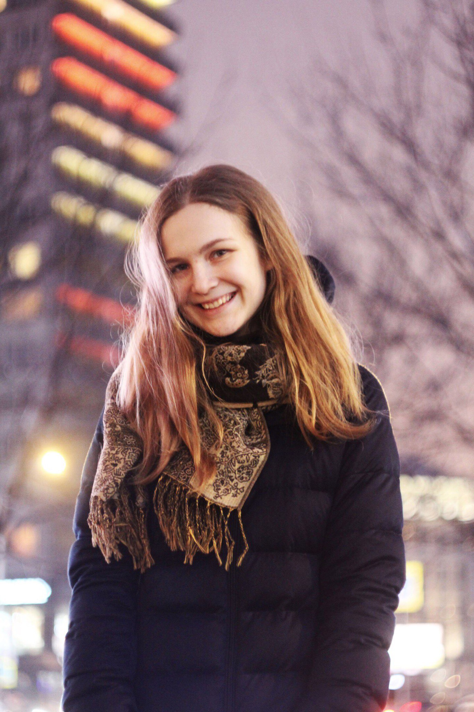

Школа лингвистики НИУ ВШЭ

Телефон: 79995617939
Email: marinajukova2@gmail.com
07.09.1998, Екатеринбург, Россия.
Навыки работы с компьютером: LATEX, Microsoft,STATA, Pascal, Delphi,Python
| Язык |
Уровень владения |
| Английский |
В2 |
| Французский |
В1 |
| Испанский |
А2 |
| Чешский |
В1 |
| Иврит |
А2 |
Образование
- 2016 – по наст. время НИУ ВШЭ, Факультет гуманитарных наук образовательная программа «Фундаментальная и прикладная лингвистика»
- 2017 «Этикет. Деловое общение. Поведение в профессиональной среде»
- 2016 «Документы и презентации в LATEX», НИУ ВШЭ
- 2005-2016 МАОУ Лицей №110 им. Л.К.Гришиной - закончила с отличием
Опыт работы
2016-17 ISIC - Отдел по развитию программы лояльности. Менеджер. Продажи b2b. Обязанности: поиск потенциальных клиентов, мониторинг действующих партнеров, работа с документацией, переговоры с партнерами.
2017 The Question - Cтажер, обязанности:транскрибирование групповых интервью, анализ данных.
2017 ABBYY - Прохождение практики в составе группы, занимающейся созданием корпусов для оценки качества онтологических описаний на основе лингвистической технологии ABBYY Compreno.
2017 Участие в проекте ФСН НИУ ВШЭ «Профориентационная работа со школами Москвы, России и зарубежья».
2016 Проведение фокус-групп среди учеников Лицея НИУ ВШЭ, транскрибирование фокус-групп и анализ полученных данных.
2016 Проведение интервью и обработка данных в бизнес-инкубаторе НИУ ВШЭ.
Хобби
Иностранные языки, путешествия